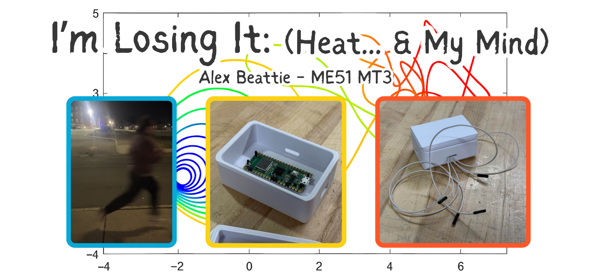
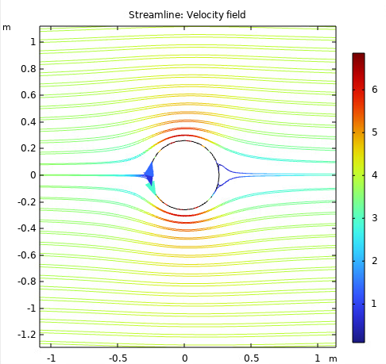
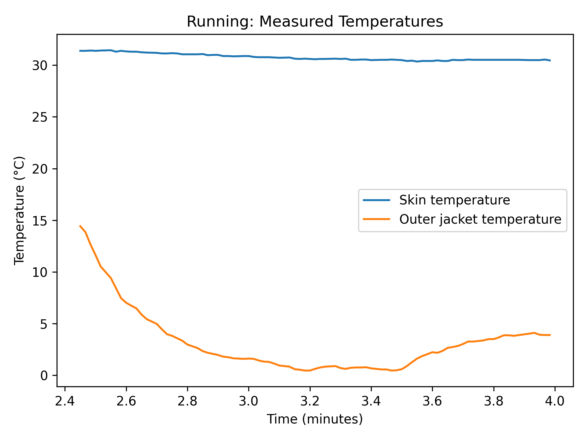

Jacket Heat Loss: Model + COMSOL + Experiment
Thermal Fluid Systems II — how much heat do you lose standing still vs running on a cold day?
I wanted this project to prove something about me: I’m not just “build stuff + teach robotics.” I can also do real analysis, make engineering assumptions, simulate, and then go validate it with actual data. This was a full loop: theory → simulation → experiment → explain the gap.





Quick project description
Built an analytical heat transfer model to estimate heat flux through my jacket and predicted inside/outside surface temperatures for standing still and running. Then I built a COMSOL simulation for comparison and validated with real measurements using thermistors (calibrated + filtered) taped on both sides of my jacket while outside in the cold.
Longer project description
The assignment was essentially: take a real scenario (running on a cold day with a jacket), and build a full engineering story around it. Not just “solve a heat transfer problem,” but actually estimate the physics, simulate it, measure it, and then explain what’s going on.
I modeled conduction through layers (skin/air gap/jacket) and convection to ambient air, then compared predictions to a COMSOL model. Finally, I collected real data by placing thermistors on the inside and outside surfaces of the jacket, logging temperatures in the cold while standing still and while running (forced convection).
Iterative design process
- Frame the problem: define what “heat loss” means here (heat flux) and what we can actually measure (surface temps).
- Build an analytical model: thermal resistance network + estimated material properties + convection assumptions.
- Identify the dominant effects: the trapped air layer dominates resistance more than the jacket material thickness.
- Simulate in COMSOL: attempted a more detailed setup, hit convergence/time constraints, then simplified to focus on convection behavior.
- Collect real data: thermistors, calibration, filtering, logging — then compare model vs simulation vs experiment.
- Explain the mismatch: assumptions, convection sensitivity, sensor accuracy limits, and what each method is “really” telling us.
Analytical model (medium math, big intuition)
I modeled the jacket as a series of thermal resistances: conduction through layers + convection to ambient air. I kept the structure clear and focused on what actually drives the result, rather than burying the page in equations.
Key insight that surprised me
The air gap inside the jacket contributes more thermal resistance than the jacket material itself. That means “insulation performance” is less about fabric thickness than it is about how well you trap still air.
I then compared two cases:
- Standing still: natural convection dominates
- Running: forced convection increases heat loss due to higher relative wind speed
The analytical model predicted a large jump in heat flux when running, because convection ramps up fast with velocity.
COMSOL simulation (engineering tradeoffs)
I used COMSOL to explore how airflow changes the outer convection behavior and to compare against my analytical assumptions. I initially tried to build a more “complete” model, but with a tight timeline I ran into convergence and complexity issues.
I made an engineering tradeoff: simplify the simulation to focus on the external forced convection behavior so I could still extract useful insights. That decision mattered because it shaped what COMSOL represented in the comparison.
How I interpret COMSOL in the comparison
My simplified COMSOL setup acts like an upper bound on heat loss because it doesn’t fully capture the jacket/air-gap insulation the way my analytical model does. That gap is not “COMSOL being wrong” — it’s a reminder that simulations reflect their assumptions.
The biggest lesson here: simulation is powerful, but only if you’re honest about what you included and what you intentionally left out.
Experimental validation (scrappy, but real)
To validate everything, I instrumented my jacket with thermistors on both sides and logged temperature data while standing outside and while running. The setup was a little scrappy (tape + wires + cold air + movement), but that’s also the point: real measurements are messy.
The hardest challenge was sensor accuracy. The thermistors were cheap and high-tolerance, so raw readings weren’t trustworthy without calibration. I spent a lot of time trying to make the data meaningful before I even compared it to the models.
Data pipeline (the part I’m proud of)
- Calibration: establish temperature references to map thermistor readings to real values
- Signal cleanup: reduce noise with filtering (kept it simple and robust)
- Logging: collect time-stamped temperature data for inside vs outside surfaces
- Comparison: convert measured ΔT into a heat flux estimate and compare to analytical + COMSOL predictions
The experimental results highlighted how sensitive convection and insulation are to real-world conditions like air movement, imperfect thermal contact, and small geometry/details that the models don’t capture.
Results + what the comparison actually means
This project wasn’t about getting one perfect number. It was about understanding what each approach is good at — and why they disagree.
- Analytical model: gives a grounded estimate and makes the dominant resistances obvious
- COMSOL: helps visualize airflow/temperature behavior, but depends heavily on setup assumptions
- Experiment: reality check — shows what happens when sensor accuracy and messy boundary conditions enter the chat
Main takeaway
Heat transfer models are extremely sensitive to assumptions (especially convection). The real engineering skill is understanding how trustworthy your answer is — not just calculating one.
Engineering skills used
Heat transfer modeling
Thermal resistance networks, conduction vs convection reasoning, and turning assumptions into an estimate.
Simulation (COMSOL)
Setting up and interpreting a multiphysics model, and making tradeoffs when time/convergence are real constraints.
Experimental instrumentation
Thermistors, calibration challenges, and designing a measurement that’s actually comparable to a model.
Data acquisition + processing
Logging, cleaning noisy sensor data, and extracting meaningful results from imperfect measurements.
Conclusions
I like building things. But I also like proving that I understand what’s going on under the hood. This project was a great reminder that engineering is not just math, and not just simulation — it’s choosing assumptions, testing reality, and being able to explain the difference clearly.
If I had more time / budget
- Go harder on COMSOL: build a simulation I’m actually proud of that better matches the analytical model structure
- Better experimental data: higher-quality sensors, better thermal contact method, and a cleaner wearable setup
- More controlled testing: repeat trials + improved estimates for wind speed and convection conditions
Overall: I got a full “engineering loop” working — model, simulate, measure, compare — and learned exactly where things break and why.